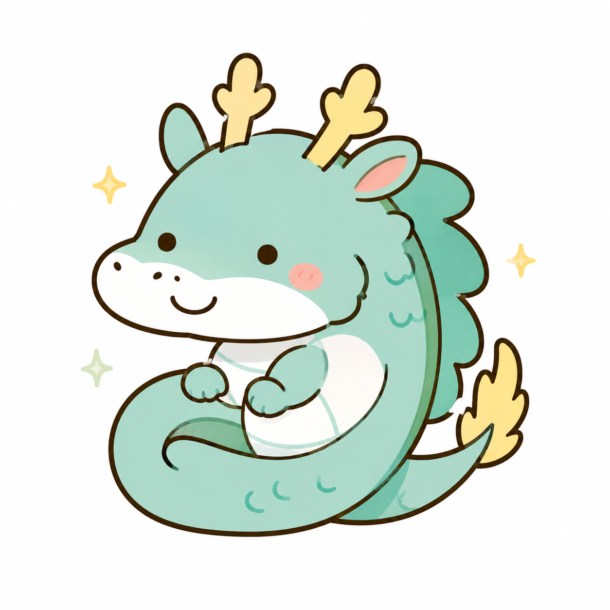

決まったやり方より、自分なりのやり方を考える方が好きだ。
無料診断｜44問
あなたの幸せタイプを診断する
5問ずつ回答して、全9ページで完了します。直感で近いものを選んでください。
ページ 1 / 9
先が見通せる環境にいると、安心して力を発揮しやすい。
目標を達成した時に、大きな充実感を覚える。
誰かの役に立てた時、自分の存在価値を感じやすい。
物事の背景や仕組みを深く知りたくなる。
人とのつながりや会話の中で元気をもらいやすい。
周囲から認められると、さらに頑張ろうと思える。
自分の中で納得できることを大切にしたい。
新しい場所や未知のテーマに触れるとワクワクする。
一度決めたことを継続して育てていくのが好きだ。
困難な目標でも、達成までの道筋を考えるのが好きだ。
困っている人を見ると、自然と手助けしたくなる。
すぐに結論を出すより、情報を集めて考えたい。
その場の空気を明るくしたり、和ませたりするのが好きだ。
自分の発言や行動が人に影響を与えると嬉しい。
他人の評価より、自分らしくあることを優先したい。
まだ形になっていないアイデアを形にすることに喜びを感じる。
やると決めたことは、最後までやり切りたい。
良いと思ったものは、人に伝えたり広げたりしたくなる。
人や仕組みを長い目で育てていくことに価値を感じる。
細かく管理されるより、裁量を持って任されたい。
信頼できる人間関係や環境があると安心する。
昨日の自分より成長している実感があると嬉しい。
自分の仕事や行動が誰かのためになることを大切にしたい。
表面的な答えより、本質的な理由を知りたい。
一人で進めるより、誰かと一緒に作り上げる方が楽しい。
自分の強みや成果をきちんと見てもらいたい。
納得できないことを続けるのは苦手だ。
変化の多い状況でも、面白がって動ける方だ。
アイデアだけで終わらせず、実行に移すことが大切だと思う。
自分の考えや想いを言葉にして伝えるのが好きだ。
表に立つより、誰かを支える役割にやりがいを感じることがある。
選択肢が多いほど、可能性が広がると感じる。
事前に準備しておくことで安心して動ける。
任されたことは責任を持って成果につなげたい。
「ありがとう」と言われると、とても満たされる。
興味のあることには時間を忘れて没頭できる。
初対面の人とも、関係をつくることを楽しめる。
自分らしさを表現し、それが受け取られると嬉しい。
自分なりの考え方や美学を大切にしている。
まだ見ぬ未来を想像することが好きだ。
難しい局面でも突破口を探して前に進みたい。
人を巻き込みながら物事を進めることにやりがいを感じる。
経験や知恵を次の誰かにつなぐことに意味を感じる。
このページの5問に回答すると、次へ進めます。
診断結果
あなたの幸せタイプは…

四神64タイプ
青龍の開拓者
まだ見ぬ未来を切り拓く人
あなたの回答から、幸せの感じ方と今発揮している役割を組み合わせたタイプを表示しています。
スタイル開拓者
四神青龍
このタイプの特徴
あなたらしい幸せの感じ方と、今発揮している役割を詳しく表示します。
幸せを感じやすい場面
どんな環境や関わり方で満たされやすいかを表示します。
仕事・人間関係での活かし方
日常や仕事でこのタイプを活かすヒントを表示します。